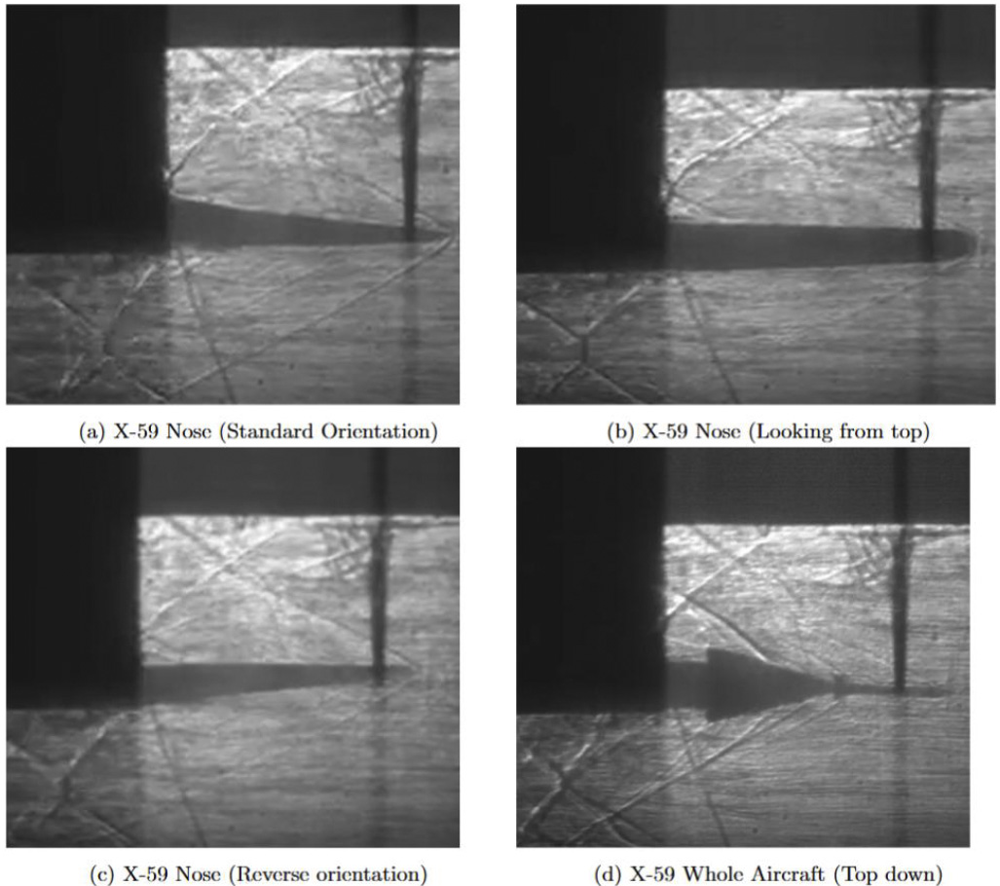
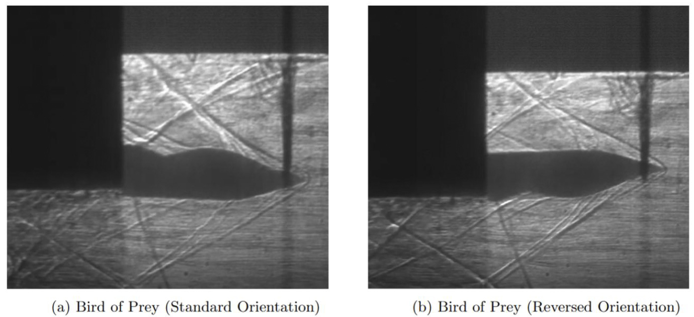

Research
High-Speed Computational Fluid Dynamics
Research Intern
University of Tennessee Space Institute
Summer 2026 – Present
My research with Dr. Esteban Cisneros-Garibay focuses on understanding hypersonic inlet unstart and shock-train dynamics using computational fluid dynamics.
Using PeleC, I perform high-fidelity compressible-flow simulations on high-performance computing systems. This work has given me experience modifying simulation parameters and source code, using adaptive mesh refinement, and investigating how operating conditions and numerical methods influence the resulting flow.
I post-process large simulation datasets using Python and VisIt to examine shock interactions, flowfield evolution, and inlet performance. Through this work, I have become particularly interested in how computational methods can be used to understand complex high-speed flow physics.
3D Mach Number Distribution
3D Pressure Distribution
Pressure Distribution wtih Gaussian Source
Compressible Flow Modeling
Undergraduate Researcher
Purdue University
Spring 2026
I worked with Dr. Haifeng Wang on developing compressible CFD models in ANSYS Fluent to investigate shock-wave propagation and steady shock behavior. I analyzed pressure, velocity, and shock structures to understand the behavior of compressible flows.
This experience introduced me to computational research and helped motivate my continued interest in CFD and high-speed flows.
Experimental Fluid Dynamics — AAE 333 Lab
Undergraduate Laboratory · Purdue University · 2025
In this laboratory course, I investigated experimental fluid dynamics through hands-on testing and analysis of fluid flows.The project and labs strengthened my understanding of how experimental observations can be used to interpret complex fluid-dynamic phenomena.
Experimental Aerodynamics — AAE 334 Lab
Undergraduate Laboratory · Purdue University · 2025
This laboratory course provided additional experience with experimental aerodynamics especially with supersonic flows, including experimental measurements, data analysis, and visualization of flow behavior. I gained experience operating experimental equipment, collecting and processing fluid-dynamic data, and interpreting flow features through visualization techniques.

Shadowgraph from the X-59 Experiment

Shadowgraph from the Bird of Prey Experiment